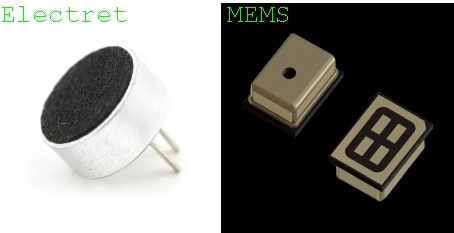
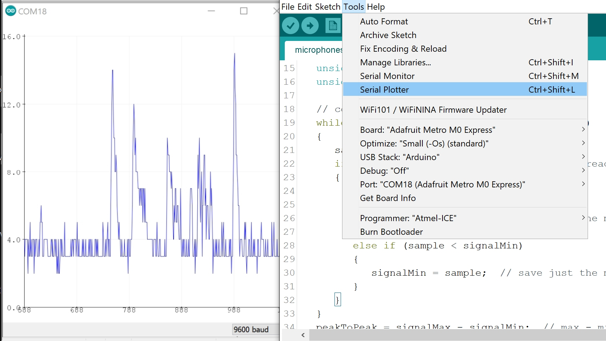
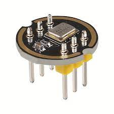
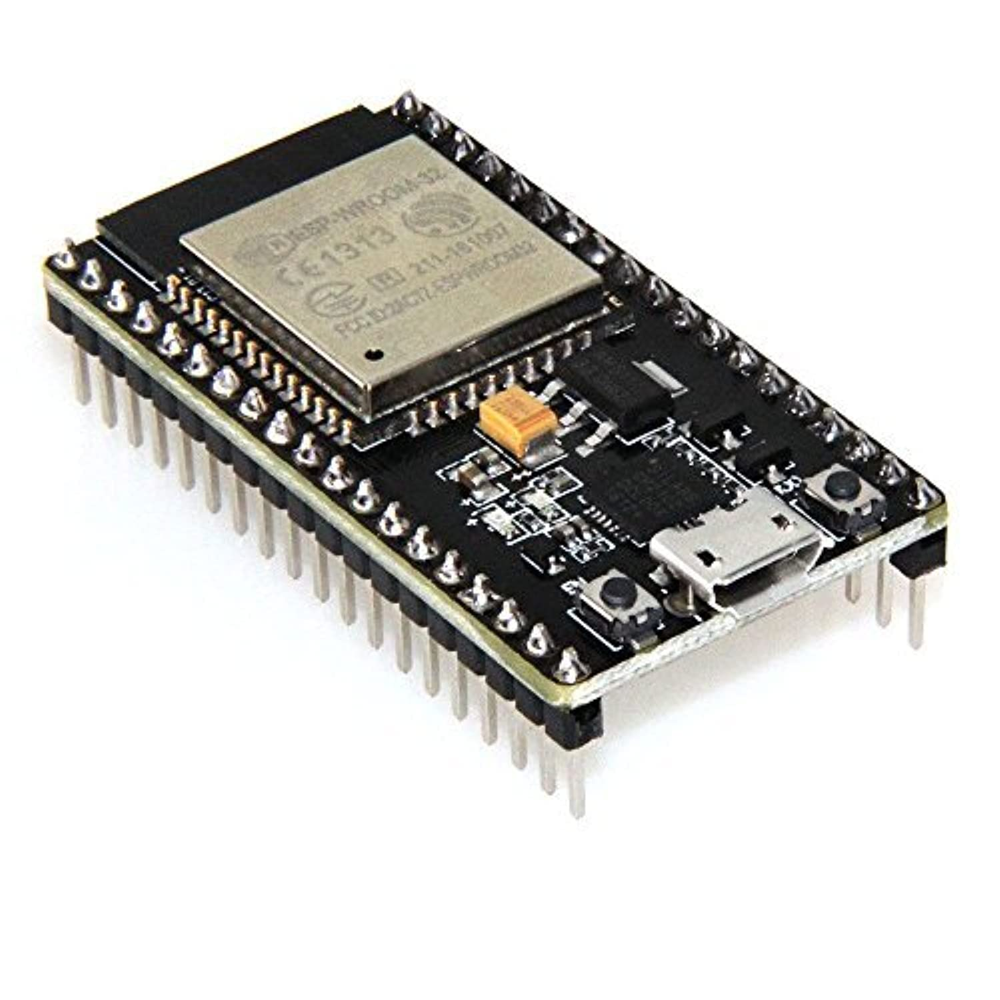

<h3> MEMS Microphone Module </h3>
<h4> Adafruit MEMS Microphone Breakout SPW2430 </h4>
<p>The most common microphones used with microcontrollers are the MEMS and electret microphones. MEMS microphones are considered an upgrade to their electret predecessor because besides having a much smaller footprint, they also contain internal semiconductors that act as an audio preamplifier. Audio preamplifiers condition small microphone level signals (on the order of one thousandth of a volt to one tenth of a volt, 0.001V – 0.1V) to line level (up to 2 volts peak to peak). Electret microphones need an external preamplifier circuit to boost its output signal. MEMS microphones can be analog or digital, the output of digital MEMS use either <a href='https://en.wikipedia.org/wiki/Pulse-density_modulation'>pulse density modulation (PDM)</a>, or <a href='https://en.wikipedia.org/wiki/I%C2%B2S'>I2S</a> protocols and can connect directly to a microcontroller, eliminating the need for an ADC.</p>

<p>The SPW2430 board uses an analog MEMS microphone and is fairly simple to hook up. You only need to <u>connect GND to GND, Vin to 3.3-5VDC,</u> and the analog audio waveform will come out of the <u>DC pin.</u> In this case, I have the DC pin connected pin A0 on the Metro M0 Express board. The AC pin can be used for applications where AC-coupled audio is required.</p>
<img src='./mems.jpg' alt='MEMS wiring'>
<p>If you upload the following code to your board, you can measure the amplitude or “loudness” of the audio signal generated by the SPW2430. Audio signals are oscillating voltage signals, think of sound <i>waves</i>, so the higher the amplitude, the greater the distance between the center voltage and the high and low peaks of the audio signal. This sketch samples the microphone audio in 50 millisecond intervals, measures the highest and lowest peaks within that sample, and then prints the difference between the peaks to Serial. In this case, it might be easier to see what’s going on by using the Serial Plotter (Tools > Serial Plotter or Ctrl+Shift+L) instead of the Serial Monitor. <br><br> </p>
<pre><code class="language-arduino">
const int sampleWindow = 50; // Sample window width in mS (50 mS = 20Hz)
unsigned int sample;
void setup()
{
Serial.begin(9600);
}
void loop()
{
unsigned long startMillis= millis(); // Start of sample window
unsigned int peakToPeak = 0; // peak-to-peak level
unsigned int signalMax = 0;
unsigned int signalMin = 1024;
// collect data for 50 mS
while (millis() - startMillis < sampleWindow)
{
sample = analogRead(0); //reading DC pin from pin A0
if (sample < 1024) // toss out spurious readings
{
if (sample > signalMax)
{
signalMax = sample; // save just the max levels
}
else if (sample < signalMin)
{
signalMin = sample; // save just the min levels
}
}
}
peakToPeak = signalMax - signalMin; // max - min = peak-peak amplitude
Serial.println(peakToPeak);
}
</code></pre>
<h4> Serial Plotter </h4>

<p>Note, this is not measuring the frequency of the sounds being picked up by the microphone. Analyzing frequency is a much more subtle and complex process which can be achieved by using <a href='https://www.norwegiancreations.com/2017/08/what-is-fft-and-how-can-you-implement-it-on-an-arduino/'>Fast Fourier Transform (FFT) libraries.</a></p>
<h3>I2S Microphone</h3>
<p>
Another way to interface with audio data, is a method called i2s. Its just a standard of communication that samples analog signals to convert them into digital signals, and
this allows your microcontroller to interface with your microphone
</p>
<p> In this example we will be using the inmp441 microphone and an esp32</p>
<div style = 'display: flex; justify-content: center;'>
<div style = 'display: flex;'>


<div>
<h4 style = "padding-left: 20px;">inmp441 pins:</h4>
<table>
<tr>
<th>INMP441</th>
<th>ESP32</th>
</tr>
<tr>
<td>WS</td>
<td>GPIO 25</td>
</tr>
<tr>
<td>SCK</td>
<td>GPIO 32</td>
</tr>
<tr>
<td>SD</td>
<td>GPIO 33</td>
</tr>
<tr>
<td>VDD</td>
<td>3.3V</td>
</tr>
<tr>
<td>GND</td>
<td>GND</td>
</tr>
<tr>
<td>L/R</td>
<td>GND</td>
</tr>
</table>
</div>
</div>
</div>
<p>
After wiring up the mic and esp32 here is the code you need to get the reading
</p>
<pre> <code>
/*
ESP32 I2S Microphone Sample
esp32-i2s-mic-sample.ino
Sample sound from I2S microphone, display on Serial Plotter
Requires INMP441 I2S microphone
DroneBot Workshop 2022
https://dronebotworkshop.com
*/
// Include I2S driver
#include <driver/i2s.h>
// Connections to INMP441 I2S microphone
#define I2S_WS 25
#define I2S_SD 33
#define I2S_SCK 32
// Use I2S Processor 0
#define I2S_PORT I2S_NUM_0
// Define input buffer length
#define bufferLen 64
int16_t sBuffer[bufferLen];
void i2s_install() {
// Set up I2S Processor configuration
const i2s_config_t i2s_config = {
.mode = i2s_mode_t(I2S_MODE_MASTER | I2S_MODE_RX),
.sample_rate = 44100,
.bits_per_sample = i2s_bits_per_sample_t(16),
.channel_format = I2S_CHANNEL_FMT_ONLY_LEFT,
.communication_format = i2s_comm_format_t(I2S_COMM_FORMAT_STAND_I2S),
.intr_alloc_flags = 0,
.dma_buf_count = 8,
.dma_buf_len = bufferLen,
.use_apll = false
};
i2s_driver_install(I2S_PORT, &i2s_config, 0, NULL);
}
void i2s_setpin() {
// Set I2S pin configuration
const i2s_pin_config_t pin_config = {
.bck_io_num = I2S_SCK,
.ws_io_num = I2S_WS,
.data_out_num = -1,
.data_in_num = I2S_SD
};
i2s_set_pin(I2S_PORT, &pin_config);
}
void setup() {
// Set up Serial Monitor
Serial.begin(115200);
Serial.println(" ");
delay(1000);
// Set up I2S
i2s_install();
i2s_setpin();
i2s_start(I2S_PORT);
delay(500);
}
void loop() {
// False print statements to "lock range" on serial plotter display
// Change rangelimit value to adjust "sensitivity"
int rangelimit = 3000;
Serial.print(rangelimit * -1);
Serial.print(" ");
Serial.print(rangelimit);
Serial.print(" ");
// Get I2S data and place in data buffer
size_t bytesIn = 0;
esp_err_t result = i2s_read(I2S_PORT, &sBuffer, bufferLen, &bytesIn, portMAX_DELAY);
if (result == ESP_OK)
{
// Read I2S data buffer
int16_t samples_read = bytesIn / 8;
if (samples_read > 0) {
float mean = 0;
for (int16_t i = 0; i < samples_read; ++i) {
mean += (sBuffer[i]);
}
// Average the data reading
mean /= samples_read;
// Print to serial plotter
Serial.println(mean);
}
}
}
</code></pre>
<p>
i2s_install is just used to tell the microcontroller how we want to communicate with the microphone and i2s_setpin is to tell the microcontroller
what pins we want to connect to the microcontroller with. The only thing you need to care about with the setup is changing I2S_WS, I2S_SD, I2S_SCK,
if you want to communicate with microphone using different pins.
</p>
<p>
The most import part of the code is i2s_read which takes in data into a buffer, defined by sBuffer, and it also tells you how many bytes it read by writing to the
variable we passed in called bytesIn. Using those to variables we can loop through the amount of bytes in our buffer to get the waveform of the audio from your
microphone
</p>